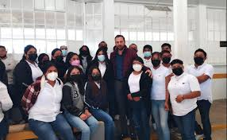
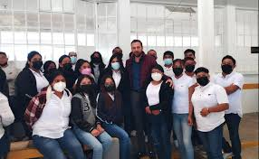

Carrera: Medicina Integral y Salud Comunitaria
Esta licenciatura forma profesionales capaces de atender la salud de las comunidades con un enfoque preventivo, integrador y humanista. Se prepara a los estudiantes para trabajar en zonas rurales y urbanas, promoviendo la medicina comunitaria.
Contacto
- Dirección: Calle Gladiolas y Tulipanes esquina, CP 91273, Perote, Veracruz
- Teléfono: 434 690 49 41
- Correo electrónico: dirvinculacion@ubbj.edu.mx
- Correo electrónico: centrodeatencion@ubbj.gob.mx
- Sitio web: https://ubbj.gob.mx/
Ubicación en Mapa
Galería
 
